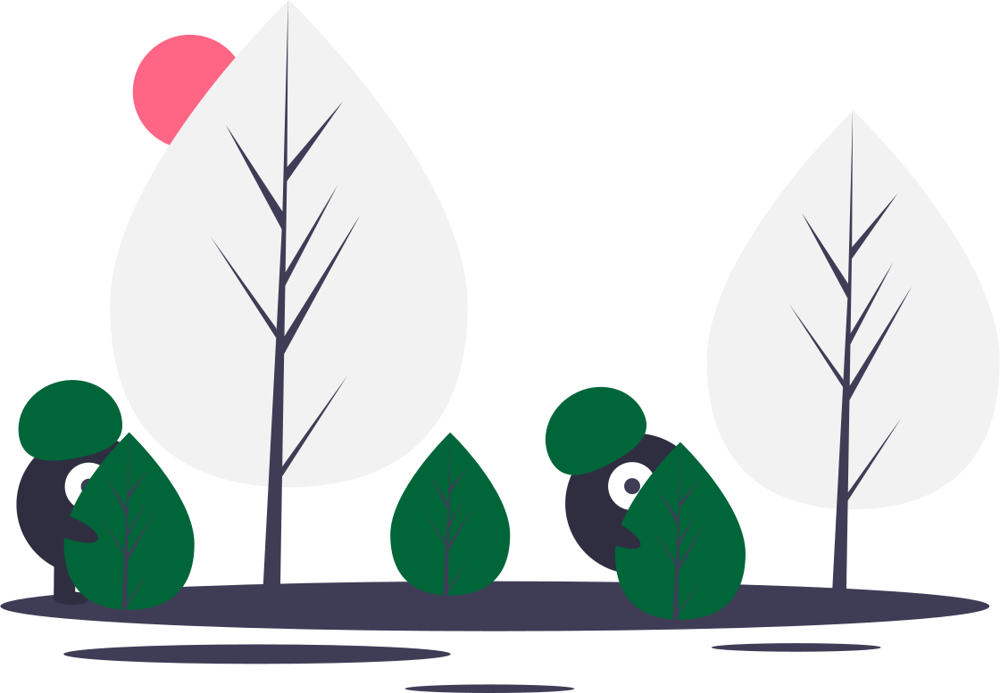

<ion-header mode="ios" color="secondary" class="ion-no-border">
  <ion-toolbar mode="ios" class="ion-text-center" color="secondary">
    <ion-title>Afecciones</ion-title>
  </ion-toolbar>
  <ion-toolbar mode="ios" class="ion-text-center" color="secondary">
    <ion-buttons slot="end" mode="ios" class="ion-text-center" color="secondary">
      <ion-button (click)="triggerAction()" color="primary">
        <ion-icon slot="icon-only" name="funnel"></ion-icon>
      </ion-button>
    </ion-buttons>
    <ion-searchbar color="secondary" mode="ios" animated (ionChange)="buscarAfecciones($event)"></ion-searchbar>
  </ion-toolbar>
</ion-header>

<ion-content color="light" class="ion-no-border">
  <ion-list color="light" *ngIf="afecciones" >
    <ion-item 
      *ngFor="let afeccion of afecciones |filtro: textoBuscar" 
      color="light" 
      (click)="onClick(afeccion)"
      detail>
      <ion-label>{{afeccion.nombre}}</ion-label>
      <ion-label color="tertiary"><small>{{afeccion.nombreTecnico}}</small></ion-label>
    </ion-item>
  </ion-list>

<div [hidden]="afecciones">
  
</div>
</ion-content>
